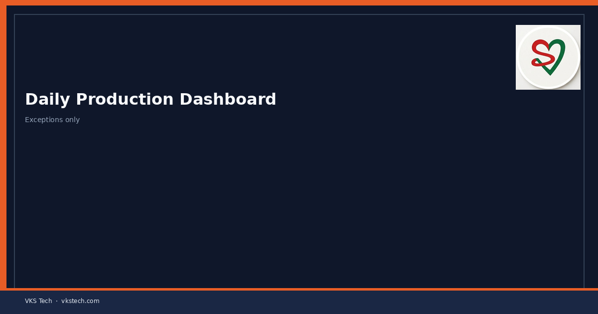
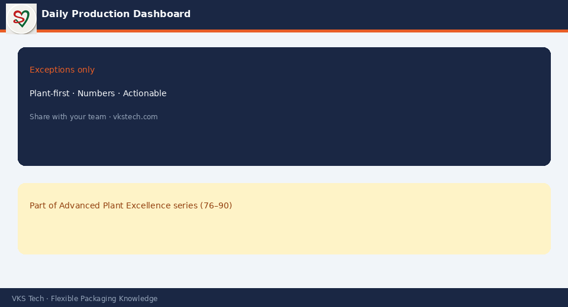

📊 A Simple Daily Dashboard That Shows Plan vs Actual, Waste, Changeovers and Top Issues Keeps the Whole Plant Aligned Without Long Meetings
📖 11-min read · Visual Management · PPC + Production + Supervisors
Many converting plants start the day with long meetings or with no shared picture at all. People leave not knowing whether they are ahead or behind, what the main losses were, or what the next priority is. A one-page (or one-screen) daily production dashboard that is updated every shift gives everyone the same facts and shortens the need for long discussions.
- Show plan vs actual for the key machines or the plant
- Show waste % or kg and the main reason codes
- Show number of changeovers and lost time
- List the top 1–3 issues of the previous shift / day
- Update it every shift and review it in the short daily meeting

1. Minimum Content That Works
| Section | What to show |
|---|---|
| Output | Plan vs actual (MT or metres) by machine or total |
| Efficiency / OEE proxy | Simple % or lost hours vs available |
| Waste | % or kg + top reason codes |
| Changeovers | Number and total time lost |
| Issues / actions | Top problems and who is acting on them |
2. How to Keep It Alive
- Assign ownership for updating (usually shift supervisor or PPC) at the end of each shift.
- Keep the format fixed so people learn to read it in seconds.
- Review it in a short daily meeting (10–15 minutes) — do not re-discuss every number, only the exceptions and actions.
- Link actions to owners and follow up the next day.
- Do not add every possible KPI. Too many numbers kill the dashboard.
3. What Changes When the Dashboard Works
- Everyone sees the same reality — fewer “I thought we were on plan” surprises
- Problems become visible the same day, not at month-end
- Meetings become shorter because the data is already shared
- Trends (waste, changeover time) become obvious over weeks
Start with one page or one screen. Add complexity only when the simple version is used consistently.
📊 एक सरल दैनिक डैशबोर्ड जो प्लान vs असल, वेस्ट, चेंजओवर और टॉप मुद्दे दिखाता है, लंबे मीटिंग के बिना पूरे प्लांट को संरेखित रखता है
📖 11-मिनट पढ़ें · विजुअल मैनेजमेंट · PPC + प्रोडक्शन + सुपरवाइजर
कई कन्वर्टिंग प्लांट दिन की शुरुआत लंबी मीटिंग से या बिल्कुल साझा तस्वीर के बिना करते हैं। लोग यह जाने बिना निकलते हैं कि वे आगे हैं या पीछे, मुख्य नुकसान क्या थे, या अगली प्राथमिकता क्या है। एक पेज (या एक स्क्रीन) का दैनिक प्रोडक्शन डैशबोर्ड जो हर शिफ्ट अपडेट होता है, सबको वही तथ्य देता है और लंबी चर्चा की जरूरत कम करता है।
- मुख्य मशीनों या प्लांट के लिए प्लान vs असल
- वेस्ट % या kg और मुख्य कारण कोड
- चेंजओवर की संख्या और खोया समय
- पिछली शिफ्ट/दिन के टॉप 1–3 मुद्दे
- हर शिफ्ट अपडेट करें और छोटी दैनिक मीटिंग में समीक्षा करें